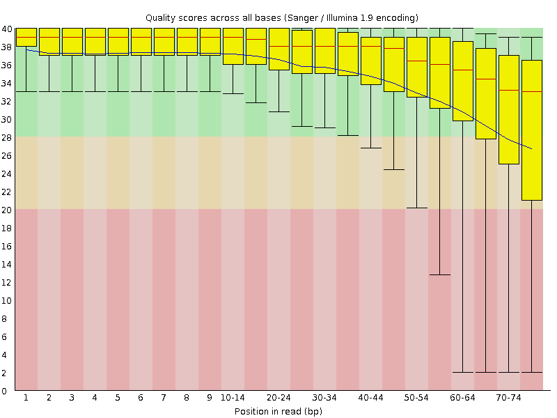
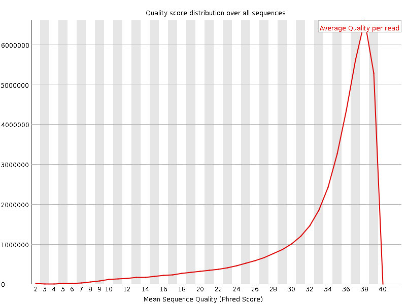
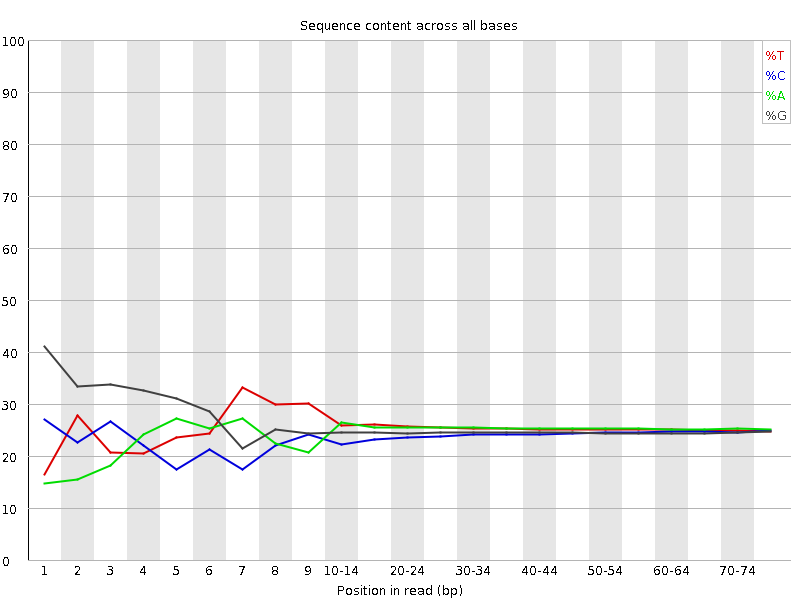
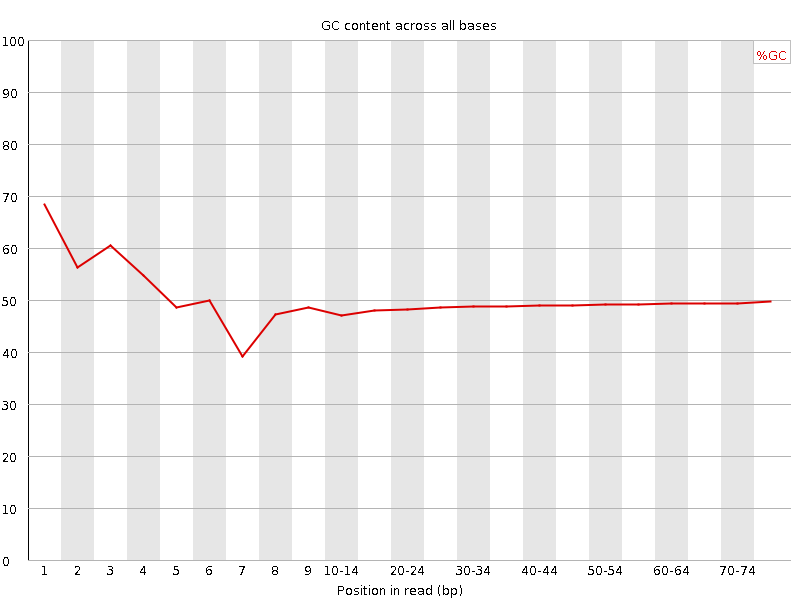
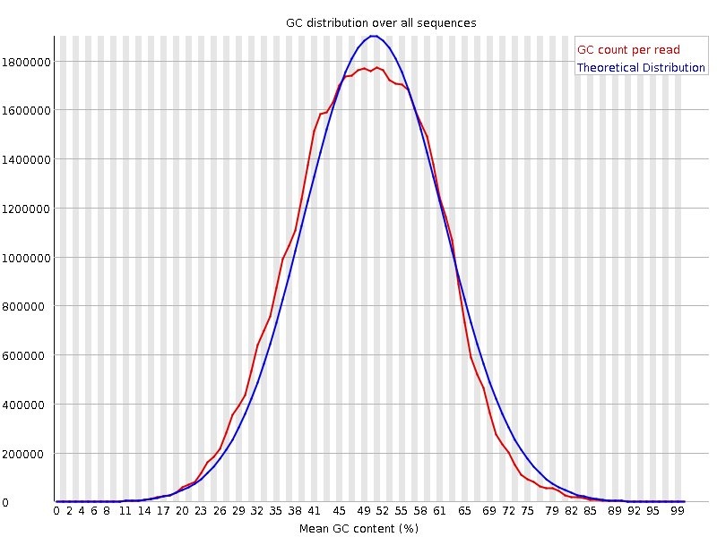
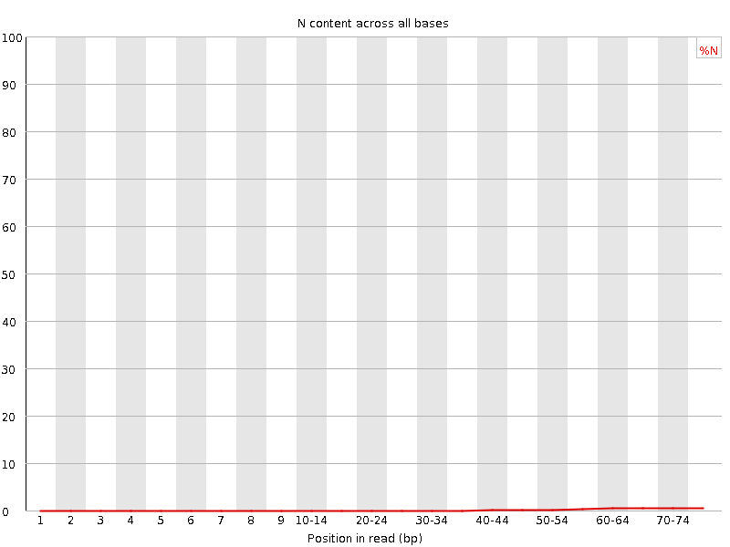
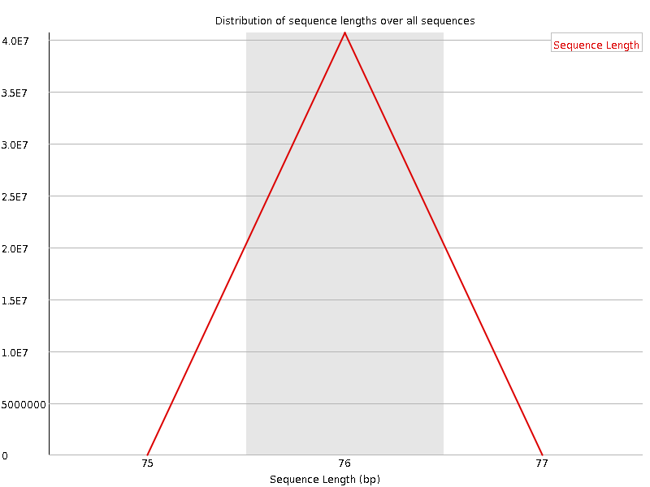
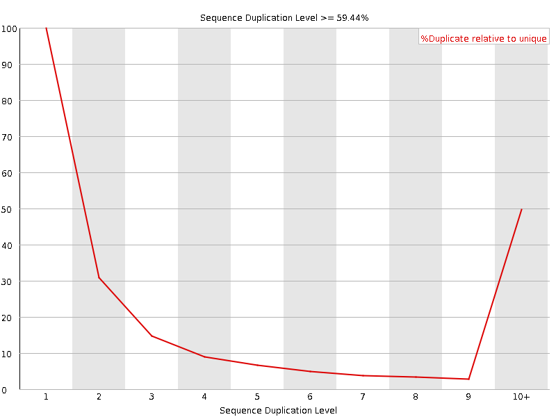
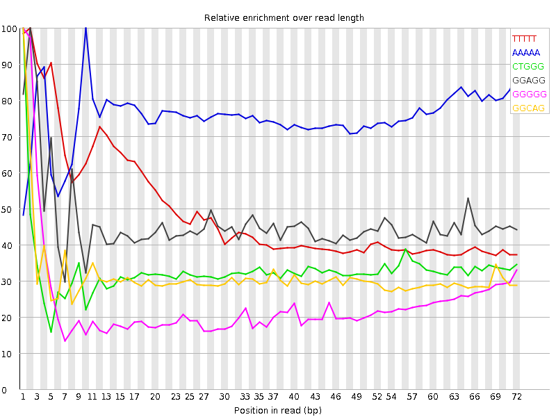

![[OK]](Icons/tick.png) Basic Statistics
Basic Statistics
| Measure | Value |
|---|---|
| Filename | SRR315324_1.fastq |
| File type | Conventional base calls |
| Encoding | Sanger / Illumina 1.9 |
| Total Sequences | 40639983 |
| Filtered Sequences | 0 |
| Sequence length | 76 |
| %GC | 49 |
Per base sequence quality

Per sequence quality scores

![[FAIL]](Icons/error.png) Per base sequence content
Per base sequence content

Per base GC content

Per sequence GC content

Per base N content

Sequence Length Distribution

Sequence Duplication Levels

Overrepresented sequences
No overrepresented sequences
![[WARN]](Icons/warning.png) Kmer Content
Kmer Content

| Sequence | Count | Obs/Exp Overall | Obs/Exp Max | Max Obs/Exp Position |
|---|---|---|---|---|
| TTTTT | 10172880 | 3.2505481 | 6.5987883 | 2 |
| AAAAA | 9323125 | 3.1748083 | 4.2084155 | 10 |
| CTGGG | 6925220 | 2.386713 | 7.249865 | 1 |
| GGAGG | 7036285 | 2.333504 | 5.0737085 | 2 |
| GGGGG | 6961965 | 2.2936344 | 9.620561 | 1 |
| GGCAG | 6340055 | 2.2130349 | 7.0925655 | 1 |
| GCTGG | 6274020 | 2.162283 | 5.496705 | 1 |
| GGGAG | 5877980 | 1.949365 | 6.269938 | 1 |
| TGGGG | 5787995 | 1.8952416 | 5.2153025 | 2 |
| GGGCA | 5343035 | 1.8650187 | 5.3889985 | 1 |
| GGGGA | 5262200 | 1.7451488 | 8.247968 | 1 |
| GGGAA | 4997205 | 1.6682646 | 6.2457576 | 1 |
| GTGGG | 4690095 | 1.5357413 | 6.997737 | 1 |
| GGGGT | 4447385 | 1.4562675 | 6.3315835 | 3 |
| CGGGG | 3227100 | 1.1190126 | 8.392341 | 1 |
| GTGGA | 3385600 | 1.1159502 | 5.091367 | 1 |